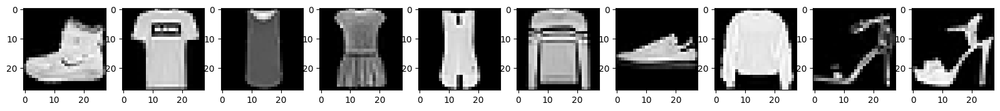
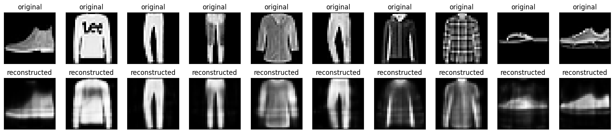

音楽生成2
名誉伝説のドラム上手くないですか？
導入
前回の音楽生成の続き
この本の目次を読んで自分で実装してみる
オートエンコーダによるメロディ圧縮
多分オートエンコーダを使った次元圧縮のことを言っているんだと思う．
メロディ圧縮は調べてもよく分からんので(多分メロディ情報の圧縮のことだと思うが)単純にオートエンコーダをいじってみる
とりあえずここを見てみる
オートエンコーダは，入力と出力が同一になるように学習することで 入力の次元圧縮器を生成する NN の一つ． 中間層が入力層よりも次元が小さくなっている．
- 次元圧縮：直感的な使い方で，入力したデータをデコーダで再現できるレベルで中間層に圧縮することで次元を削減できる
- 異常検知：正常な入力だけで NN を学習すれば，異常な入力をしたときに出力側で再現できなくなるので，異常検知に使うことができる．
実装
チュートリアルをなぞるだけだけどやってみる
import matplotlib.pyplot as plt
import numpy as np
import pandas as pd
import tensorflow as tf
from sklearn.metrics import accuracy_score, precision_score, recall_score
from sklearn.model_selection import train_test_split
from tensorflow.keras import layers, losses
from tensorflow.keras.datasets import fashion_mnist
from tensorflow.keras.models import Model
(x_train, _), (x_test, _) = fashion_mnist.load_data()
x_train = x_train.astype('float32') / 255.
x_test = x_test.astype('float32') / 255.
print (x_train.shape)
print (x_test.shape)
print(x_train[1].shape)
fig, ax = plt.subplots(1, 10, figsize=(20, 2))
for i in range(10):
ax[i].imshow(x_train[i], cmap='gray')
(60000, 28, 28)
(10000, 28, 28)
(28, 28)

ここまではチュートリアル通り． あとはエンコーダとデコーダを実装するがここからは見ずに書く． ここを参考にやる． これまでは Sequential クラスのコンストラクタを使って NN を構築していたが， チュートリアルが Model クラスのサブクラス化でやっているので， せっかくならこっちのやり方もできるようになろうという魂胆
from tensorflow.keras import Sequential
from tensorflow.keras.models import Model
from tensorflow.keras import layers
class MyAutoEncoder(Model):
def __init__(self, *args, **kwargs): # 基底クラスのコンストラクタを上書きする
super(MyAutoEncoder, self).__init__(*args, **kwargs) # python2.x 系に合わせる
self.encoder = Sequential()
self.encoder.add(layers.Flatten())
self.encoder.add(layers.Dense(
32,
activation= "tanh",
name = "encoder"))
self.decoder = Sequential()
self.decoder.add(layers.Dense(
784,
activation = "sigmoid",
name = "decoder"))
self.decoder.add(layers.Reshape((28, 28)))
def call(self, inputs):
encoded = self.encoder(inputs)
decoder = self.decoder(encoded)
outputs = decoder
return outputs
autoencoder = MyAutoEncoder()
autoencoder.compile(
optimizer='adam',
loss=losses.MeanSquaredError())
autoencoder.fit(x_train,
x_train,
epochs = 20,
batch_size = 32,
shuffle = False)
autoencoder.summary()
1875/1875 [==============================] - 4s 2ms/step - loss: 0.0138
Epoch 19/20
1875/1875 [==============================] - 4s 2ms/step - loss: 0.0137
Epoch 20/20
1875/1875 [==============================] - 5s 3ms/step - loss: 0.0137
Model: "my_auto_encoder_13"
_________________________________________________________________
Layer (type) Output Shape Param #
=================================================================
sequential_21 (Sequential) (32, 32) 25120
sequential_22 (Sequential) (32, 28, 28) 25872
=================================================================
Total params: 50992 (199.19 KB)
Trainable params: 50992 (199.19 KB)
Non-trainable params: 0 (0.00 Byte)
_________________________________________________________________

それっぽいのではないでしょうか．．．
VAE とメロディモーフィング
メロディモーフィング
メロディモーフィングが初耳だったので調べた． どうやらそのままの意味で，二つのメロディをモーフィングするらしい． だから，二つのメロディが与えられたときにその中間的なメロディを出力することができる，ということ
VAE
さきのオートエンコーダは，入力を Encoder に通して，次元削除したのちに，
Decoder に通して復元する，という手順をとる．
このとき，オートエンコーダができる「特徴量抽出」はこの
次元削除後の変数によって決定されるわけだけど，この直接測定できない
特徴量みたいなもののことを潜在変数という．
VAE はこの潜在変数に確率分布を仮定したところが違う．
オートエンコーダは結局次元圧縮後の潜在変数がどうなっているかわからないが，
VAE は確率変数を仮定することで構造を理解しやすくする．
実装
これはメロディが付いた方が面白そうなので実際に midi を触りながらやる． ここらへんを見ながら